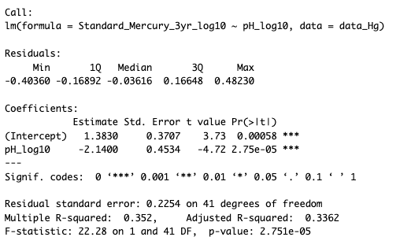
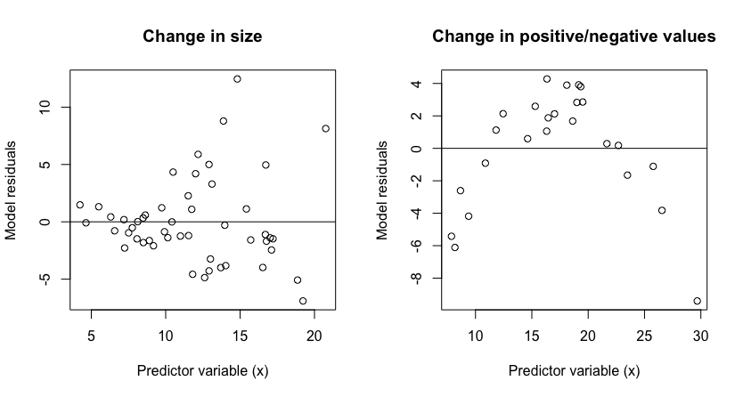

31 Q2: Linear regression
Research Question:
Is there a relationship between bill depth and body mass in female Adélie penguins?
We’ve identified which variable we want to move forward with. However, before we go any farther, we need to think about the difference between correlation and regression.
Question: We have just done a correlation test on this data set. Can we also do a regression? Why or why not?
We have a specific motivation for predicted body mass based on bill size, so we have a good reason to go ahead with a regression.
There is also a good mechanistic reason to think that bigger penguins might weigh more.
31.1 Hypotheses
Next, we write down our null and alternative hypotheses.
\(\mathrm{H}_0\): There is no significant linear relationship between bill depth and body mass.
\(\mathrm{H}_\mathrm{A}\): There is a significant linear relationship between bill depth and body mass.
31.2 Linear regression
The function that performs linear regression in R is called lm(), which stands for “linear model”.
- We will use
lm()to run a linear regression with one continuous predictor variable. - However,
lm()is a very flexible and powerful function that you can use to fit other types of models as well. (We will use it later for the ANOVA.)
To use lm(), you need to give it two lists of numbers (i.e. outcome and predictor variables) using a model formula. Just like for plot(), you can refer to the columns directly with $ or give the data frame using the data = argument.
For example, the code below runs two identical linear regressions:
# Two ways to fit the same linear regression
lm(outcome_var ~ predictor_var, data = mydf)
lm(mydf$outcome_var ~ mydf$predictor_var)Run a linear regression substituting in your data frame and variable names.
Question: What output do you see in the Console?
The basic output that gets printed is:
- the code we ran
- the two coefficients that define the regression line through our data (i.e. the intercept and the slope)
However, we want more than just that. We also want:
- a P-value to tell us if the effect of of our predictor is significant
- an \(R^2\) value to tell us how well our predictor variable predicts the variation in the outcome variable
- the 95% CIs for both of the coefficients that define our best fit line.
In order to get these extra details, we need to store our linear model output as an object, and then use two functions to give us the information:
-
summary()- provides a P-value and an \(R^2\) value for a model -
confint()- provides 95% CIs for model coefficients
# Linear regression + summary of output + 95% CIs
lm_out <- lm(outcome_var ~ predictor_var, data = mydf)
summary(lm_out)
confint(lm_out)Modify your lm() code to store it as an object, and then use summary() and confint() on the model object. Run the code.
Question: Now what output do you see in the Console?

This output has a lot of information!
- The code you used to make the model.
- Summary statistics on the model residuals - these are the differences between each observed data point and it’s predicted value from the model. (We will talk more about these in the next section.)
- Information on the model coefficients, i.e. the slope and intercept for the regression line. The slope is named for the predictor variable that it gets multiplied by. R provides the coefficient itself (Estimate), the standard error of the coefficient, a t-value test statistic, and a P-value that the coefficient is significantly different from zero (
Pr(>|t|), the probability of observing a t statistic this extreme by random chance). Depending on the significance of the P-value, there may or may not be asterisks indicating how significant it is. - Information about the overall model: residual standard error, degrees of freedom, two versions of \(R^2\), an F test statistic for the full model, and a p-value for the full model (which will match the P-value for the slope if you have only one predictor variable).
You can ignore much of this information. The main things that you need to pay attention to are:
- The estimates of the model coefficients (i.e. the equation for your regression line)
- The P-value for the slope coefficient / the whole model (they are the same for a one-predictor linear regression).
- The adjusted \(R^2\) value - remember how this is related to r, the correlation coefficient!
However, when you report your results as a sentence you will also want to note:
- a test statistic (either t for the predictor variable or F for the full model - either one is okay)
- the degrees of freedom, df
Information:
The adjusted \(R^2\) value is modified to account for the number of predictors in your model.
The more predictors you have, the more different it will be from the basic \(R^2\).
We could write down theses statistics now since we’ve gotten them from the R output - but there are few other checks that we need to do first.
31.3 Evaluating a linear regression model
The final step for fitting a linear regression model is to analyse the residuals, which are the differences between each observed data point and its predicted value from the model. For the linear regression model assumptions to be valid, the residuals:
- should be Normally distributed.
- should not change their pattern with the value of the predictor variable (i.e. become much bigger/smaller or more likely to be positive/negative as you move along the x-axis).
You can extract the residuals from a model with the function resid().
Type the following code into your script - substituting your model name - and run it.
# Calculate residuals of the linear regression
resid(lm_out)Question: What output do you see in the Console?
R has printed a list of numbers containing all the differences between the predicted value and each observed point in our data set. Conveniently, that is the exactly data format that the examine_norm() function uses.
Use your function examine_norm() to examine the residuals of the model.
Question: Do the residuals look Normally distributed? Do they pass the formal tests?
Now we need to plot the residuals and see if they change substantially along with values of the predictor variable.
As mentioned above, the residuals should not change their pattern with the value of the predictor variable. The figures below show examples of what you do NOT want to see!
- In the left panel, the residuals get bigger as x gets bigger.
- In the right panel, the residuals are positive in the middle and negative on the ends.

Just like we did at the beginning, when we were making our first scatter plots, we will use the plot() function and give it our x values first and y values second.
This time, we will also a function abline() to add a horizontal line at y = 0, so it’s obvious which values are positive and which are negative. The first argument (a = 0) is the intercept and the second argument (b = 0) is the slope.
Modify the code below to plot the residuals for your model over your predictor variable.
# Plot the model residuals and the predictor variable
# add a horizontal line at y = 0
plot(resid(lm_out) ~ mydf$predictor_var)
abline(a = 0, b = 0)Question: Do the residuals look like they change substantially along with the predictor variable?
If the residuals of the model are not Normally distributed, or their pattern changes over the predictor variable, you may have a nonlinear relationship between your variables!
This means your linear regression model is probably not appropriate for describing your data, and is why it so important to make a scatter plot of your data first!!!
If the residuals are normal and the plot looks okay, then you are ready to report your results. You can re-run the summary() and confint() code to re-print the important values at the bottom of your console (or you can scroll up to find them).
Question:
Based on your regression analysis results:
- Is P < 0.05?
- Should you reject or accept the null hypothesis?
Write down a formal sentence describing the outcome of the test as a comment in your script.
You sentence should include:
- the overall result of the research question
- the name of the test
- the slope and intercept coefficients, with 95% CIs
- the adjusted \(R^2\)-value
- a test statistic, either t or F
- the degrees of freedom, df
- the P-value
Most of these quantities are usually provided in parentheses at the end of the sentence.